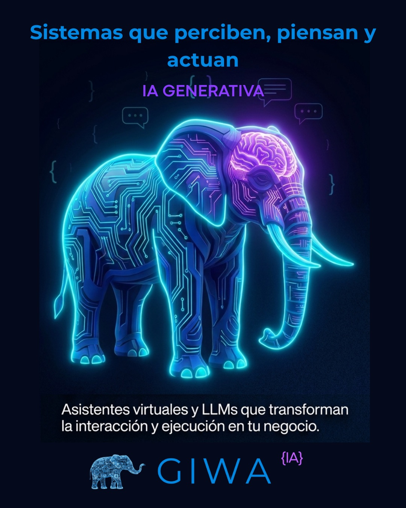
01
Agentes Inteligentes
Bots y agentes conversacionales en WhatsApp, Teams y más. Atienden, responden y resuelven de forma autónoma las 24hs, sin intervención humana.
Agencia de inteligencia artificial
Automatizamos tus flujos de trabajo, optimizamos procesos y desarrollamos agentes inteligentes que evolucionan con tu negocio.
Quiénes somos
Somos una agencia impulsada por la IA y potenciada por el talento humano. Creemos que la tecnología sola no alcanza: se necesita criterio, experiencia y una mirada estratégica para convertirla en soluciones reales.
En GIWA unimos ambos mundos en un equipo alineado, ágil y enfocado en resultados concretos.
HablemosPrimero entendemos el problema real antes de pensar en la solución.
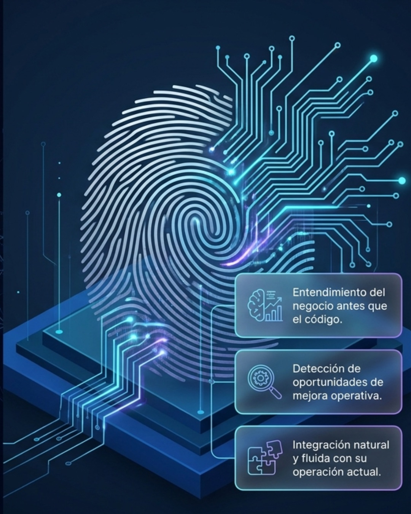
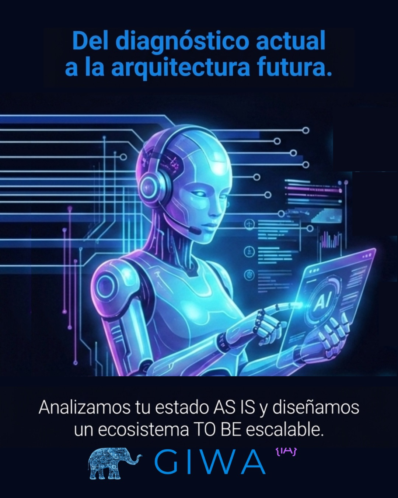
Construimos en ciclos cortos con entregas de valor constante.
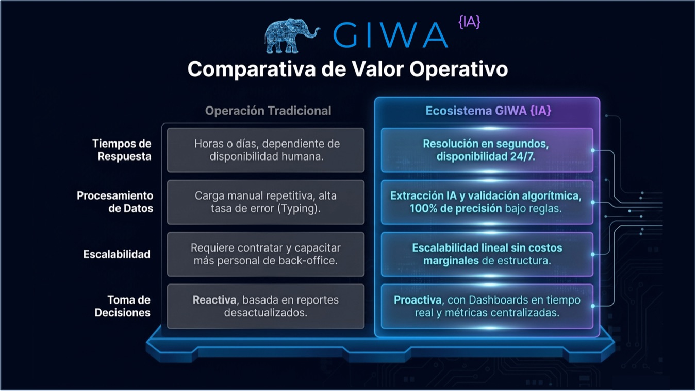
Mejora continua. Las soluciones evolucionan junto al negocio.
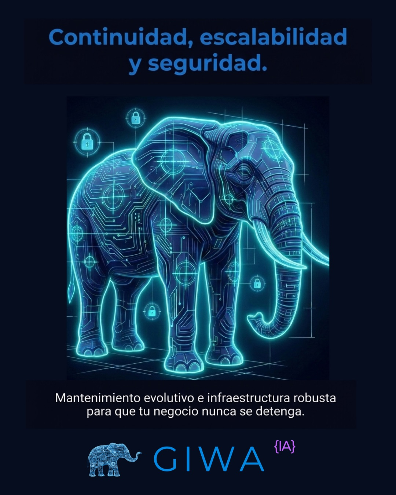
Servicios
Entendemos cómo funciona tu negocio, detectamos oportunidades de mejora y desarrollamos soluciones que se integran de forma natural a tu operación.

Bots y agentes conversacionales en WhatsApp, Teams y más. Atienden, responden y resuelven de forma autónoma las 24hs, sin intervención humana.
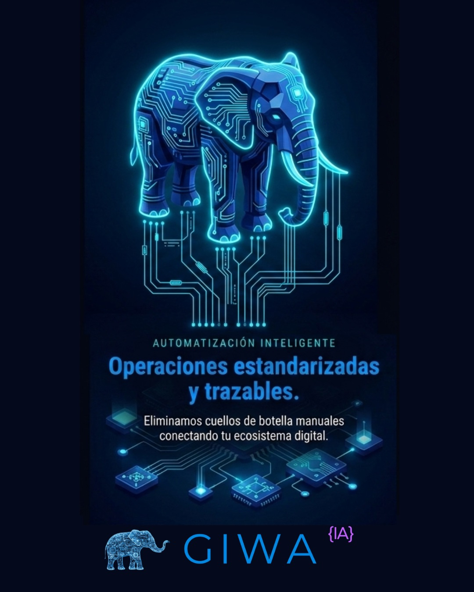
Eliminamos tareas repetitivas e integramos tus sistemas para que los datos fluyan sin fricciones. Más velocidad, menos errores humanos.
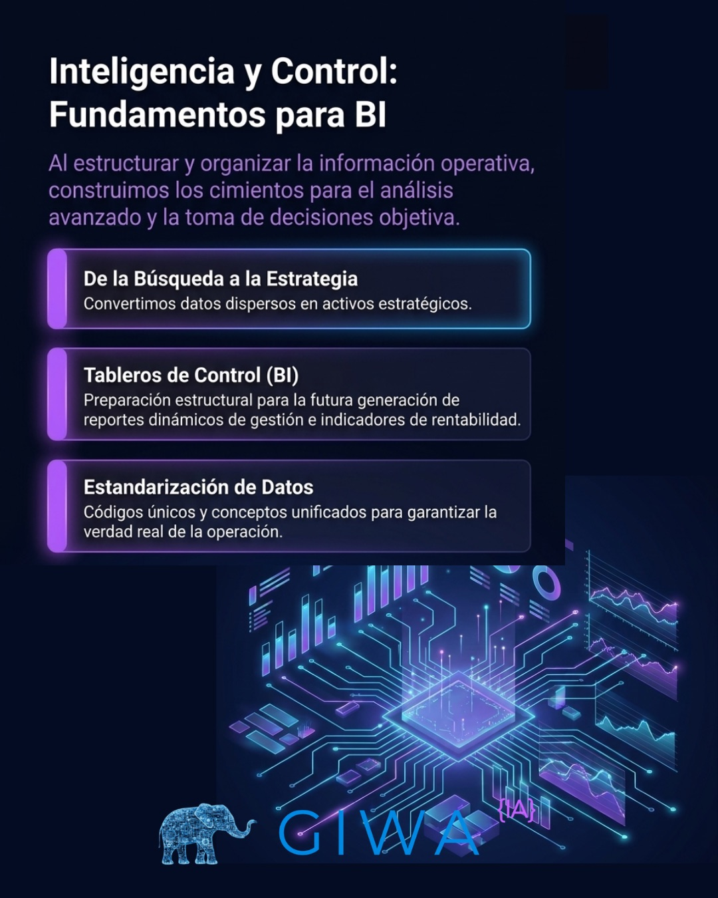
Convertimos tus datos en decisiones. Dashboards en tiempo real que muestran los KPIs que importan, con alertas automáticas ante desvíos.
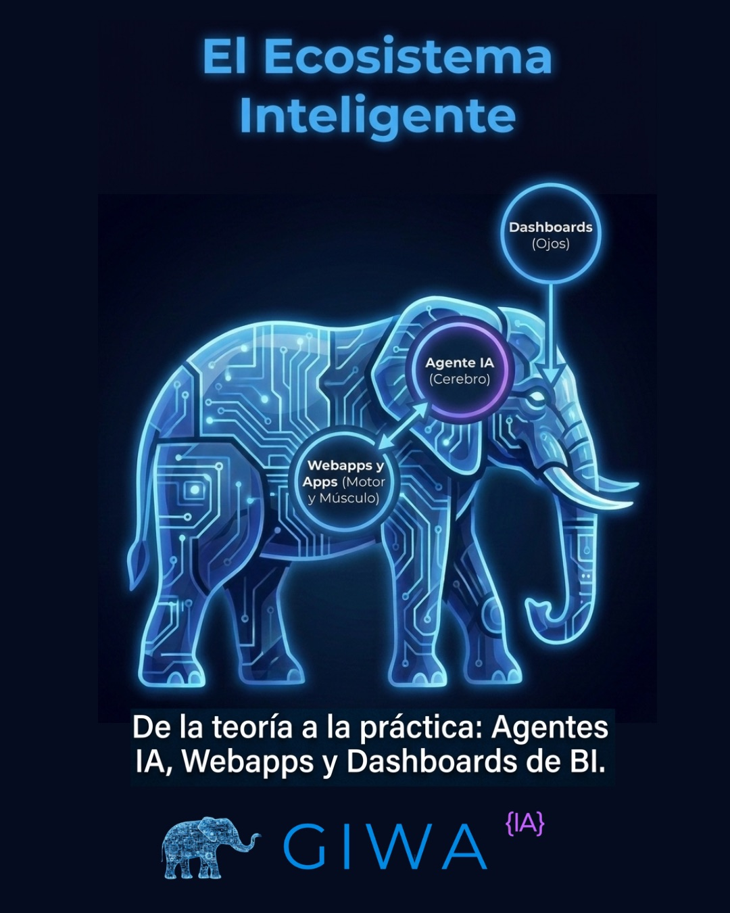
Aplicaciones mobile y web para gestionar cualquier proceso interno. Sin código innecesario, con la funcionalidad exacta que tu equipo necesita.
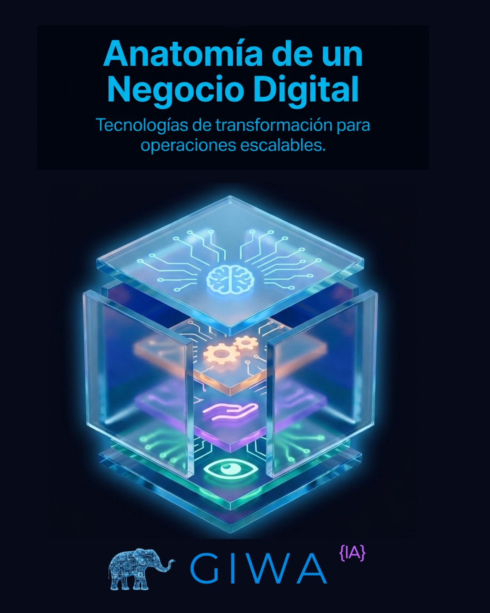
Conectamos tus sistemas existentes y construimos CRMs personalizados adaptados a tu proceso de ventas, sin pagar por funcionalidades que no usás.
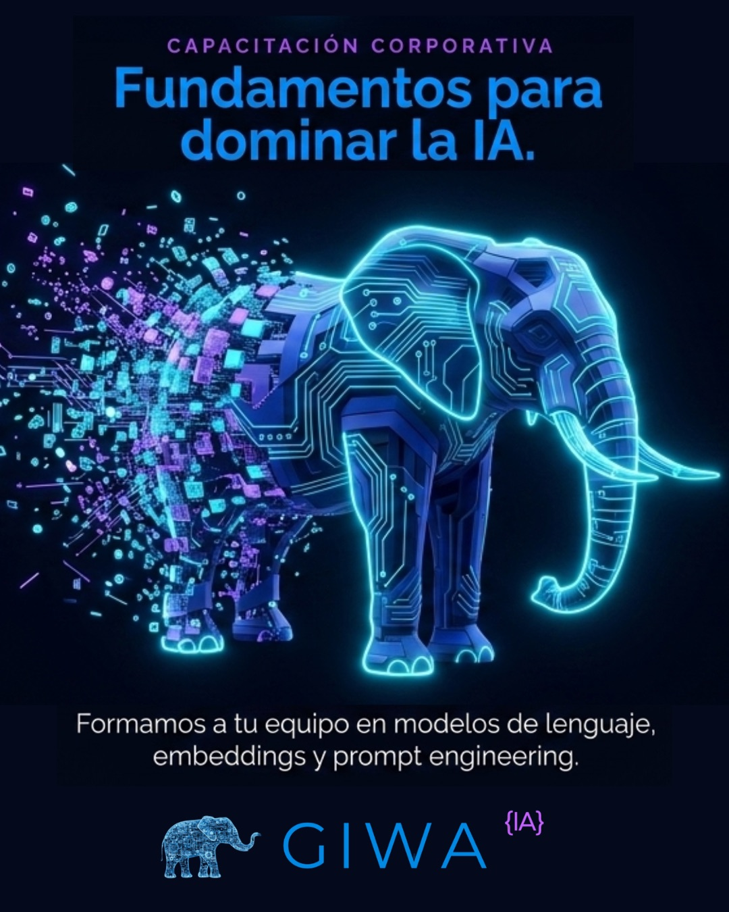
Analizamos tu operación, identificamos dónde la IA genera más valor real y diseñamos una hoja de ruta ejecutable. Sin humo, con resultados concretos.
Seguridad
La IA no es peligrosa cuando está bien diseñada, bien integrada y bien cuidada. Por eso la estructura va antes que la tecnología.
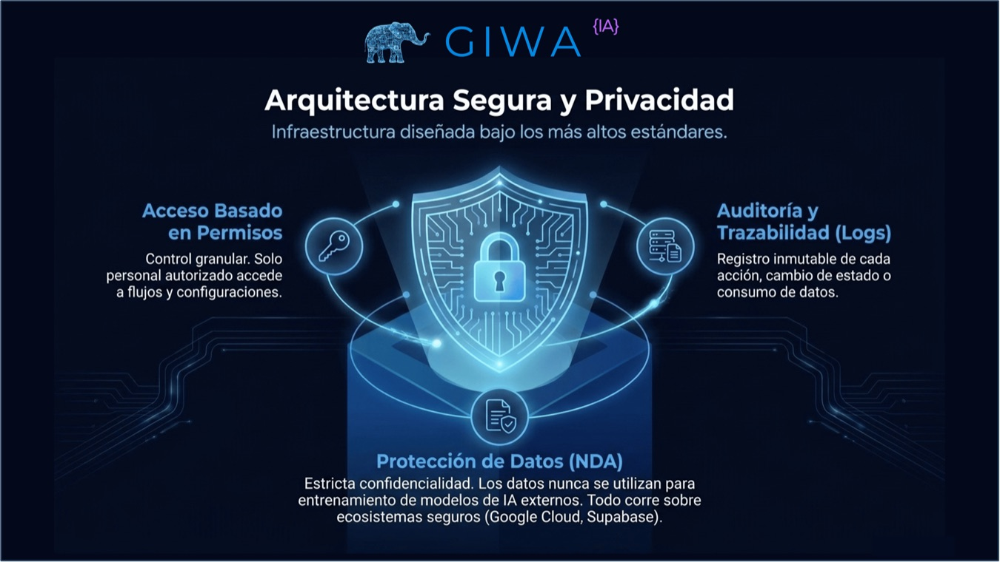
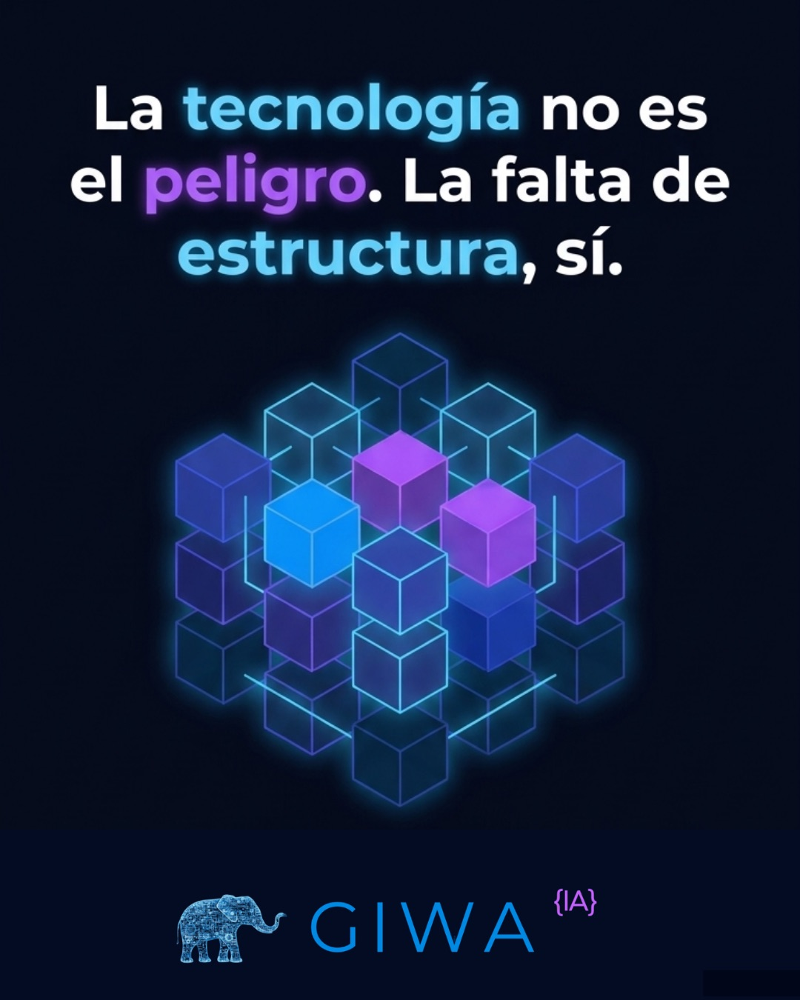
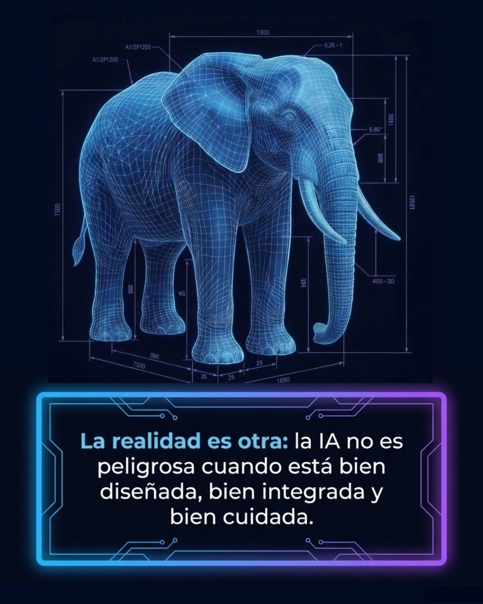
En GIWA transformamos operaciones complejas en experiencias simples, humanas y eficientes.
Nuestros casos de éxito muestran cómo la inteligencia artificial puede ordenar procesos, eliminar fricción y potenciar lo que realmente importa: las personas.
Explorá cómo distintas organizaciones modernizaron su manera de trabajar gracias a soluciones diseñadas con precisión, equidad y tecnología invisible.
No te contamos lo que hacemos. Te lo mostramos. Explorá nuestros demos en vivo.
Ver demosContacto
Contanos tu desafío.